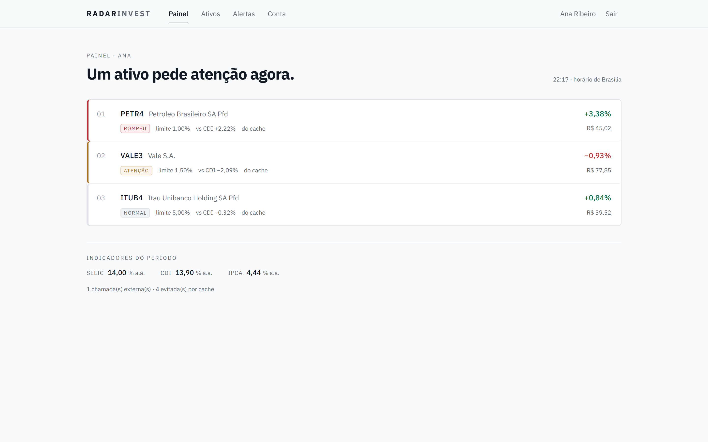
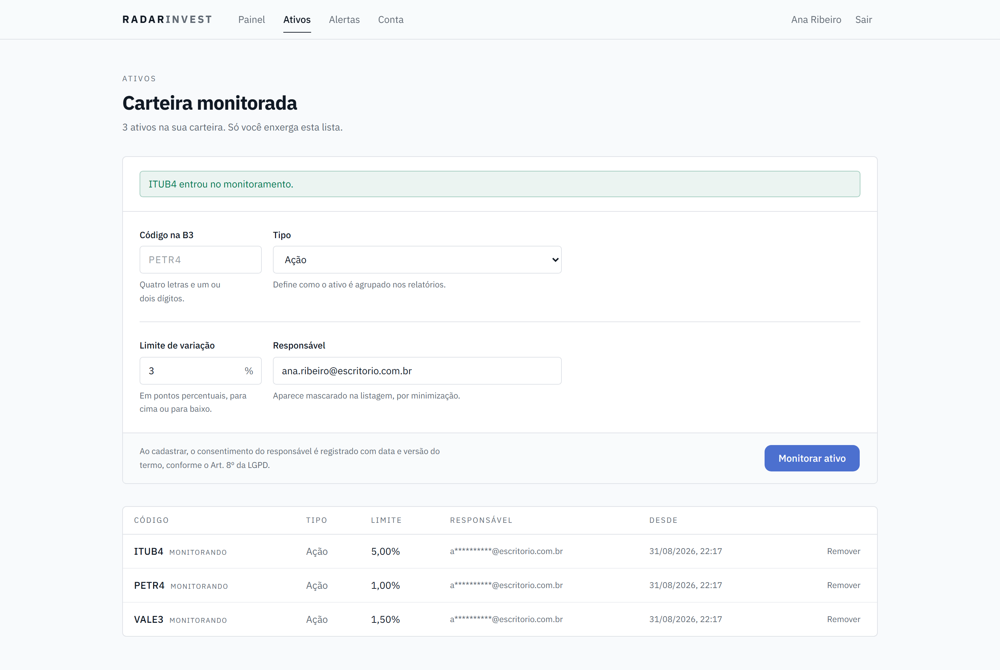

Graduação Tecnológica em Inteligência Artificial e Automação Digital
Integração de APIs
João Henrique Benatti Coimbra
RadarInvest: central inteligente de monitoramento de mercado
Análise e discussão da integração entre APIs públicas e privadas
2026
Escritórios de assessoria de investimentos acompanham dezenas de ativos usando ferramentas que não conversam entre si. O assessor consulta cotações em um sistema, indicadores macroeconômicos em outro, registra o que julga relevante em uma planilha e avisa o cliente por mensagem quando lembra. Este trabalho descreve o RadarInvest, uma aplicação que consolida três serviços externos em uma interface única, aplica regras de negócio sobre os dados coletados e dispara alertas automáticos quando um ativo rompe o limite de variação configurado pelo assessor. A solução integra a brapi.dev, que exige credencial, a BrasilAPI, que é aberta, e o Airtable, usado como banco de dados no-code. O documento discute a justificativa de cada escolha, o fluxo de integração, a estratégia de autenticação adotada, a forma de armazenamento e os cuidados com proteção de dados pessoais previstos na Lei Geral de Proteção de Dados. A aplicação está publicada e o código-fonte é aberto.
Palavras-chave: integração de sistemas; API REST; autenticação; proteção de dados pessoais; automação.
Um escritório de assessoria de investimentos de porte pequeno ou médio acompanha dezenas de ativos distribuídos entre carteiras de clientes diferentes. O trabalho de acompanhamento, na prática, permanece manual. O assessor abre o home broker para verificar cotações, consulta um segundo site para saber a taxa Selic vigente, anota em uma planilha o que considerou relevante e envia uma mensagem ao cliente quando se lembra de fazê-lo.
Nenhuma dessas informações é escassa. Cotações da B3 e indicadores macroeconômicos oficiais estão disponíveis publicamente, muitos deles em formato legível por máquina. O que falta não é o dado, e sim a resposta que se extrai dele. A pergunta que o assessor precisa responder várias vezes ao dia é específica: quais dos ativos sob sua responsabilidade exigem atenção neste momento, e por qual motivo.
A fragmentação cobra dois preços. O primeiro é o tempo gasto reunindo dados, que deixa de ser gasto no atendimento ao cliente. O segundo é menos visível e mais grave: um alerta que depende da memória de uma pessoa chega tarde ou não chega. Movimentos relevantes de preço acontecem enquanto o assessor está em reunião, almoçando ou atendendo outro cliente.
Este trabalho descreve a concepção e a implementação do RadarInvest, uma aplicação que integra três serviços externos para responder àquela pergunta de forma contínua. O documento apresenta a solução proposta, justifica a escolha de cada API consumida, descreve o fluxo de integração, a estratégia de autenticação e segurança, a forma de armazenamento e manipulação dos dados e os cuidados adotados quanto à proteção de dados pessoais, ética e governança.
O código-fonte está disponível em repositório público e a aplicação encontra-se publicada em ambiente de produção, com documentação de interface gerada a partir das rotas implementadas.
O RadarInvest consolida as fontes dispersas em uma aplicação única. O assessor cadastra os ativos que deseja monitorar e informa, para cada um, a variação percentual que considera relevante. A partir desse cadastro, o sistema coleta cotações e indicadores macroeconômicos em intervalos regulares, cruza as duas informações, calcula quais ativos merecem atenção prioritária, grava o histórico em um banco de dados acessível ao time não técnico e envia um alerta quando algum limite configurado é rompido.
O ganho da solução não está em exibir dados que já existem em outros lugares. Está em transformá-los em uma ordem de prioridade. A tela principal apresenta os ativos da carteira ordenados por nível de atenção, e não por ordem alfabética ou por data de cadastro.
A classificação segue três faixas. Um ativo cuja variação absoluta atingiu ou ultrapassou o limite configurado recebe a classificação crítica. Um ativo cuja variação atingiu sessenta por cento do limite recebe a classificação de observação. Os demais permanecem em situação normal. A faixa intermediária existe porque um painel binário, que informa apenas se o limite foi rompido ou não, avisa tarde: o assessor tem interesse em ver o ativo se aproximando do limite, e não somente o rompimento já consumado.
A aplicação também calcula uma métrica derivada que nenhuma das APIs consumidas fornece pronta. A variação de cada ativo é comparada ao Certificado de Depósito Interbancário do período, obtido da BrasilAPI e convertido da taxa anual para a taxa mensal. O resultado informa quanto o ativo rendeu acima ou abaixo do custo de oportunidade de referência do mercado brasileiro. Esse cruzamento entre duas fontes independentes é o que distingue integração de simples consumo.
A interface foi construída para leitura rápida. A Figura 1 apresenta a tela principal com três ativos cadastrados e limites diferentes, o que produz as três faixas de classificação simultaneamente.

Fonte: elaborado pelo autor (2026).
A leitura acontece pela borda esquerda de cada linha. A régua vertical codifica o nível de atenção por espessura e cor. A cor do número percentual, por sua vez, codifica a direção do movimento, seguindo a convenção que o assessor já utiliza no home broker, em que a alta aparece em verde e a baixa em vermelho.
A separação dos dois eixos foi deliberada. Na Figura 1, o ativo PETR4 subiu 3,38 por cento e rompeu um limite configurado em 1 por cento. Ele aparece com régua vermelha, por ser crítico, e com número verde, por ter subido. Se o nível de atenção também determinasse a cor do número, uma alta expressiva apareceria em vermelho e a leitura imediata do sinal se perderia.
O rodapé da tela informa quantas chamadas externas foram feitas e quantas foram evitadas pelo cache. Essa informação será retomada na seção 6.3.
A Figura 2 apresenta a tela de cadastro de ativos. O formulário separa a identificação do ativo da regra de monitoramento, porque os campos respondem a perguntas distintas: qual é o ativo e a partir de que ponto ele merece atenção.

Fonte: elaborado pelo autor (2026).
Na listagem, o endereço de correio eletrônico do responsável aparece parcialmente mascarado. O motivo é discutido na seção 7.2.
A aplicação consome três serviços externos. A escolha não foi determinada apenas pela disponibilidade dos dados, mas também pela intenção de exercitar naturezas diferentes de integração dentro do mesmo projeto. O Quadro 1 resume as três.
| Serviço | Natureza | Autenticação | Papel no projeto |
|---|---|---|---|
| brapi.dev | Privada | Bearer Token | Cotações de ativos negociados na B3 |
| BrasilAPI | Pública | Nenhuma | Selic, CDI e IPCA |
| Airtable | Privada | Personal Access Token | Persistência em banco no-code |
Fonte: elaborado pelo autor (2026).
A brapi.dev fornece cotações de ativos negociados na Bolsa de Valores de São
Paulo. O acesso exige credencial enviada no cabeçalho Authorization,
no formato Bearer definido pela RFC 6750 (JONES; HARDT, 2012).
A exigência de credencial foi um critério de escolha, e não um obstáculo contornado. Ela obriga o projeto a tratar três situações que uma API aberta não apresentaria: a proteção da chave fora do código-fonte, a construção correta do cabeçalho de autorização e o tratamento das respostas de erro do provedor. A aplicação distingue quatro códigos devolvidos pela origem. O código 401 indica credencial inválida ou ausente, o 402 indica que o limite do plano contratado foi excedido, o 404 indica ticker inexistente e o 429 indica excesso de requisições.
O tratamento diferenciado do código 402 merece registro. A resposta poderia ser agrupada com as demais falhas de origem, mas a causa e a correção são diferentes. Repetir a requisição não resolve o esgotamento de cota, que exige mudança de plano. Reportar as duas situações com o mesmo código transformaria o fim das quinze mil requisições mensais do plano gratuito em um problema difícil de diagnosticar.
A BrasilAPI reúne dados públicos brasileiros em interfaces REST padronizadas. O projeto consome o recurso de taxas, que devolve Selic, CDI e IPCA. O serviço não exige autenticação.
A escolha funciona como contraponto deliberado à brapi.dev. Ter as duas lado a lado torna a distinção entre API pública e privada visível no próprio código, e não apenas na documentação. O adaptador da BrasilAPI não envia cabeçalho de autorização, e essa ausência está comentada no arquivo correspondente. Enviar credencial para um serviço que não a solicita expõe o segredo sem nenhum ganho.
A comparação também evidencia o limite das APIs abertas. Dados públicos são adequados para consulta e enriquecimento, mas não sustentam sozinhos uma aplicação de negócio. Sem as cotações da brapi.dev, o RadarInvest não teria o que monitorar.
O Airtable foi adotado como banco de dados no-code, atendendo ao requisito de persistência do trabalho. A escolha tem três justificativas.
A primeira é a consistência conceitual. O Airtable expõe interface REST com o mesmo padrão Bearer das outras duas integrações, com escopo definido por base e token revogável pelo painel administrativo. Trocar o banco de dados não altera o modelo de autenticação empregado no restante do sistema.
A segunda é operacional. Os registros ficam visíveis em uma interface de planilha, o que permite que membros não técnicos do escritório consultem o histórico sem intermediação e sem conhecimento de SQL.
A terceira é pedagógica. As restrições da plataforma são rígidas e conhecidas, o que obriga o projeto a desenhar o acesso ao redor delas em vez de tratá-las como detalhe. A seção 6.3 detalha essas restrições e suas consequências no código.
A Figura 3 apresenta o fluxo entre os componentes internos da aplicação e os serviços externos consumidos.
Fonte: elaborado pelo autor (2026).
Uma decisão de arquitetura merece destaque no diagrama. A interface renderizada no servidor não consome a própria API REST pela rede. Ela invoca a camada de serviço diretamente, por chamada de função. Uma página do servidor que se comunica com a própria API paga uma volta completa de serialização, transporte e desserialização para conversar consigo mesma. A API REST continua existindo, com finalidade definida: atender o código executado no navegador, o agendador e eventuais consumidores externos.
O ciclo completo percorre cinco etapas.
Coleta. A aplicação consulta os dois serviços de dados, servindo do cache o que ainda estiver dentro do tempo de vida configurado.
Normalização. Os dois documentos JSON chegam com estruturas distintas e são convertidos para um modelo interno único. Este ponto é detalhado na seção 6.2.
Aplicação das regras. A variação de cada ativo é comparada ao limite cadastrado e ao CDI do período, produzindo o nível de atenção e a métrica comparativa.
Persistência. Os resultados são gravados no Airtable em lote, e somente aqueles que sofreram alteração relevante.
Notificação. Os ativos que passaram a romper o limite geram alerta, que é enviado ao canal configurado pelo titular da carteira.
A aplicação possui dois caminhos que buscam cotações, e a distinção entre eles costuma gerar confusão. O Quadro 2 os compara.
| Característica | Consulta do painel | Ciclo agendado |
|---|---|---|
| Momento de execução | Ao abrir a página | A cada quinze minutos durante o pregão |
| Busca cotações | Sim | Sim |
| Grava histórico | Não | Sim |
| Gera alerta | Não | Sim |
| Finalidade | Mostrar a situação atual | Vigiar na ausência do assessor |
Fonte: elaborado pelo autor (2026).
Os dois caminhos são necessários. Sem a consulta sob demanda, o painel exibiria dados com até quinze minutos de defasagem. Sem o ciclo agendado, o assessor só tomaria conhecimento de um rompimento quando decidisse abrir a aplicação, o que anula a finalidade do sistema.
A automação é acionada por um fluxo de trabalho hospedado no GitHub Actions, agendado para dias úteis entre as treze e as vinte e uma horas em tempo universal coordenado, faixa que corresponde ao pregão da B3 no horário de Brasília. O agendador não executa regra de negócio alguma: ele realiza uma requisição HTTP autenticada e encerra. Toda a lógica permanece na aplicação.
A escolha do GitHub Actions em lugar do agendador da plataforma de hospedagem teve motivo prático. O plano gratuito da plataforma executa tarefas agendadas uma vez por dia, frequência incompatível com monitoramento de mercado. Um benefício adicional é que o arquivo de configuração do fluxo fica versionado no repositório, o que torna a automação um artefato revisável em vez de uma configuração invisível em painel administrativo.
Uma regra de negócio do ciclo merece detalhamento por ser contraintuitiva. O alerta é disparado na transição de estado, e não com base no estado corrente.
Cada ativo armazena um campo que registra se ele estava ou não em situação de rompimento no ciclo anterior. O alerta só é gerado quando esse campo muda de normal para rompido. Enquanto o ativo permanece rompido, o sistema atualiza o registro sem gerar novo alerta.
Sem essa regra, um ativo que rompesse o limite pela manhã geraria um alerta a cada quinze minutos até o fechamento do pregão. O assessor silenciaria o canal de notificação em poucas horas e, com ele, perderia também os alertas relevantes. A qualidade de um sistema de alerta depende menos da velocidade de entrega e mais da confiança de que cada notificação recebida significa algo novo.
A autenticação do RadarInvest foi implementada sem bibliotecas prontas de gerenciamento de sessão. A decisão foi pedagógica: o mecanismo precisa ser explicável linha a linha, o que não seria possível delegando o assunto a uma dependência.
O sistema emite duas credenciais com características opostas, resumidas no Quadro 3.
| Característica | Token de acesso | Token de renovação |
|---|---|---|
| Formato | JWT assinado com HS256 | 32 bytes aleatórios, opaco |
| Validade | 15 minutos | 7 dias |
| Onde é mantido | Memória do cliente | Cookie inacessível a scripts |
| Armazenamento no servidor | Não é armazenado | Resumo SHA-256 |
| Pode ser revogado | Não | Sim |
Fonte: elaborado pelo autor (2026).
O token de acesso não é revogável. Depois de emitido, permanece válido até expirar, porque a validação consulta apenas a assinatura e a data de expiração, sem consultar o banco de dados. A janela curta de quinze minutos é o que limita o dano em caso de vazamento.
O token de renovação existe justamente para ser revogável, e por isso é registrado no banco. Ele não é um JWT. Um JWT carrega estado assinado e vale enquanto não expirar, o oposto do que se espera de uma credencial que precisa poder ser invalidada no instante em que se descobre um comprometimento. O valor opaco não significa nada isoladamente: só tem utilidade quando confrontado com o registro correspondente.
O armazenamento usa SHA-256, e não uma função de derivação lenta como bcrypt ou Argon2. Funções lentas existem para compensar a baixa entropia de senhas escolhidas por pessoas. Um valor de 256 bits gerado por fonte criptográfica não é suscetível a força bruta, e uma derivação custosa acrescentaria latência a cada renovação sem ganho correspondente. O resumo cumpre a função pretendida: o vazamento da tabela não entrega credenciais utilizáveis.
Cada autenticação bem-sucedida abre uma família de tokens identificada por um valor único. Cada renovação emite um token novo dentro da mesma família e marca o anterior como consumido.
Se um token já consumido for apresentado novamente, existem apenas duas explicações possíveis. Ou ele vazou e está sendo usado por terceiro, ou vazou, foi usado por terceiro e agora o titular legítimo o apresenta. Nos dois casos a cadeia está comprometida. A resposta implementada é revogar a família inteira e recusar a requisição. Revogar apenas o token apresentado deixaria viva a outra extremidade da cadeia, que é justamente a do atacante.
A família expira sete dias após a autenticação, e a rotação não estende esse prazo. Cada token novo herda a data de expiração original. Sem essa restrição, uma sessão renovada a cada quinze minutos permaneceria válida indefinidamente.
A técnica segue a recomendação de rotação de tokens de renovação descrita nas boas práticas de segurança para OAuth 2.0 (LODDERSTEDT et al., 2020).
O sistema distingue papel de escopo. O papel indica a função geral do usuário. O escopo delimita o acesso concreto a uma operação. A conversão de papel em escopos ocorre uma única vez, no momento da autenticação, e o resultado é gravado no token. Isso implica que a promoção de um usuário só produz efeito a partir da autenticação seguinte, comportamento intencional e documentado.
Toda rota protegida executa a mesma sequência de verificação, nesta ordem:
validar o token falha resulta em 401 extrair a identidade verificar o escopo falha resulta em 403 verificar a posse falha resulta em 403 ou 404 consultar os dados filtrar a resposta
A verificação de posse é o passo que não pode ser omitido. Sem ela, a interface fica exposta à falha catalogada pela OWASP como Broken Object Level Authorization, em que um usuário devidamente autenticado acessa recurso pertencente a outro (OWASP, 2023). Um token válido comprova identidade e nunca comprova propriedade.
Na implementação, o identificador do proprietário extraído do token é incorporado à consulta enviada ao banco de dados, e não aplicado como filtro em memória posteriormente. Trazer a carteira inteira do escritório para descartar o que não pertence ao solicitante consumiria cota do serviço e faria dados de terceiros transitarem pela aplicação sem necessidade.
A consulta de um ativo pertencente a outro usuário devolve o código 404, e não 403. Devolver 403 confirmaria que aquele código de negociação existe na carteira de alguém, informação que o solicitante não deveria conseguir extrair.
As senhas são armazenadas com scrypt, função de derivação de chave definida na RFC 7914 (PERCIVAL; JOSEFSSON, 2016) e recomendada para armazenamento de senhas quando Argon2 não está disponível (NIST, 2017). Os parâmetros utilizados são custo de CPU e memória igual a 2 elevado a 14, fator de blocos igual a 8 e paralelismo igual a 1, o que resulta em aproximadamente 16 megabytes de memória por verificação e algumas dezenas de milissegundos de processamento.
O custo é irrelevante para o usuário legítimo, que se autentica poucas vezes ao dia, e proibitivo para tentativas de força bruta em escala, que é exatamente a assimetria pretendida.
O resumo armazenado inclui os parâmetros utilizados na sua geração. Sem esse registro, aumentar o custo no futuro invalidaria todas as senhas já cadastradas. A comparação é feita em tempo constante, porque a comparação convencional encerra no primeiro byte divergente e a diferença de tempo, mensurável ao longo de muitas tentativas, revelaria o prefixo correto.
Nenhuma variável de ambiente do projeto utiliza o prefixo que a plataforma de desenvolvimento emprega para expor valores ao navegador. Esse prefixo embute o conteúdo no pacote entregue ao cliente, o que exporia todas as credenciais do arquivo. As chaves são lidas exclusivamente por código executado no servidor.
A validação das variáveis ocorre na inicialização do processo, antes que a primeira requisição seja atendida. Se alguma chave obrigatória estiver ausente ou inválida, o servidor não sobe e a mensagem de erro nomeia a chave. A alternativa seria descobrir a ausência dentro de um manipulador de requisição, em produção, com o usuário aguardando.
As mensagens de erro devolvidas ao consumidor seguem um envelope único composto por indicador de sucesso, código estável legível por máquina e mensagem destinada a pessoas. Erros não previstos são convertidos em um código genérico de erro interno, e o erro original é registrado apenas no servidor. Um rastro de pilha devolvido ao cliente equivale a entregar um mapa da aplicação a quem estiver sondando.
A base no Airtable é composta por cinco tabelas, descritas no Quadro 4.
| Tabela | Conteúdo |
|---|---|
| Users | Contas de acesso, papel, registro de consentimento e canal pessoal de alertas |
| Sessions | Famílias de tokens de renovação, com resumo, marcação de uso, revogação e expiração |
| Assets | Ativos monitorados, limite de variação, proprietário e estado de alerta |
| Quotes | Histórico de cotações coletadas, com origem e instante da coleta |
| Alerts | Alertas gerados, com direção, variação, limite rompido e situação de notificação |
Fonte: elaborado pelo autor (2026).
O Airtable não oferece chave estrangeira nem integridade referencial. As relações entre tabelas são mantidas por identificadores gravados como texto, e a consistência é responsabilidade da camada de serviço. A eliminação de uma conta, por exemplo, executa remoções em ordem definida: primeiro as sessões, para que nenhuma credencial sobreviva ao registro que ela autenticava, e por último a conta, para que uma falha intermediária não deixe ativos órfãos apontando para um identificador inexistente.
Cada serviço externo possui um adaptador dedicado, e todos devolvem o modelo interno da aplicação, nunca o documento original da origem. Se a brapi.dev renomear um campo, apenas o adaptador correspondente precisa ser alterado.
A necessidade fica evidente na estrutura devolvida pela brapi.dev, que aninha os dados relevantes dois níveis abaixo da raiz, dentro de um arranjo de resultados. O adaptador achata essa estrutura para os campos que o restante da aplicação utiliza.
Um detalhe do tratamento merece registro. A resposta da brapi.dev inclui tanto o código solicitado quanto o código atual do ativo, que podem divergir quando houve renomeação na bolsa. O adaptador utiliza o código solicitado como chave, porque é ele que corresponde ao cadastro feito pelo assessor. Ativos que retornam sem preço válido são descartados em vez de propagarem valores inválidos para o cálculo do ranqueamento.
As restrições dos serviços consumidos determinaram o desenho do acesso a dados. O Quadro 5 relaciona cada restrição à decisão correspondente.
| Restrição | Decisão adotada |
|---|---|
| Airtable: cinco requisições por segundo por base | Fila de execução serial com intervalo mínimo de 210 milissegundos |
| Airtable: excesso bloqueia a base por trinta segundos | Espera fixa de trinta segundos, e não recuo exponencial curto |
| Airtable: dez registros por requisição de escrita | Escritas fatiadas em lotes de dez |
| Airtable: cem registros por página de leitura | Leitura paginada até o fim do conjunto |
| brapi.dev: quinze mil requisições mensais no plano gratuito | Todos os códigos agrupados em uma única requisição por ciclo |
Fonte: elaborado pelo autor (2026).
O agrupamento de códigos é a decisão de maior impacto. Uma carteira com doze ativos consome uma requisição por ciclo, e não doze. Com quatro execuções por hora durante oito horas de pregão em vinte e dois dias úteis, o consumo mensal fica em torno de setecentas requisições, folgadamente dentro do limite do plano gratuito.
Três mecanismos adicionais reduzem o consumo. O primeiro é um cache em memória com tempo de vida configurável, indexado por código de negociação e não pelo conjunto consultado, de modo que a inclusão de um ativo novo na carteira não invalide os demais. O segundo é a persistência seletiva: uma cotação cujo preço não se moveu além de um centésimo de ponto percentual não gera nova linha no histórico. O terceiro é a verificação de horário, que encerra o ciclo sem qualquer chamada externa fora do pregão.
Os contadores de chamadas realizadas e evitadas são expostos na resposta da interface e exibidos no rodapé do painel. A escolha é deliberada. Redução de consumo que não é medida não pode ser verificada, e afirmações sobre sustentabilidade digital sem número associado permanecem retóricas.
O tratamento de dados pessoais realizado pela aplicação tem como base legal o consentimento do titular, previsto no artigo 7º, inciso I, da Lei nº 13.709 de 2018 (BRASIL, 2018).
O consentimento é registrado no ato do cadastro, com três informações: o aceite, a versão do termo vigente e a data em que foi manifestado. O registro da versão importa porque o consentimento se refere a um texto específico, e um aceite sem indicação do que foi aceito não comprova nada. A ausência de aceite impede a criação da conta, o que faz do consentimento uma condição e não um campo opcional de formulário.
O princípio da necessidade, previsto no artigo 6º, inciso III, da mesma lei, foi aplicado como decisão de modelagem, e não apenas como filtro de apresentação.
A tabela de sessões não armazena endereço IP nem identificação do navegador. Esses dados seriam úteis para um painel de dispositivos conectados que a aplicação não possui. Sem finalidade definida, o dado não é coletado. Registrar primeiro e decidir depois inverte o princípio.
Na leitura, o endereço de correio eletrônico do responsável por um ativo é parcialmente mascarado. O assessor precisa identificar de quem é o ativo, e para isso a primeira letra e o domínio são suficientes. O endereço completo seria dado além da finalidade da tela.
Dois direitos previstos no artigo 18 foram implementados como funcionalidade, e não apenas mencionados em política de privacidade. Um direito que não corresponde a uma operação disponível permanece como texto.
A portabilidade, prevista no inciso V, é atendida por uma operação que devolve em formato JSON tudo o que a aplicação armazena sobre o titular: cadastro, registro de consentimento com data e versão, ativos monitorados e alertas gerados. Nessa operação específica o endereço de correio eletrônico não é mascarado, porque o destinatário é o próprio titular. O resumo da senha é excluído da exportação: ele não representa informação útil ao titular, e colocar uma cópia em circulação apenas cria risco adicional.
A eliminação, prevista no inciso VI, remove a conta, os ativos monitorados, os alertas gerados e as sessões abertas. A operação exige confirmação por digitação na interface, porque é irreversível e não há cópia de segurança dos dados removidos.
Três decisões de governança merecem registro.
O token de acesso ao Airtable foi emitido com permissão restrita a uma única base, e não ao espaço de trabalho inteiro. Os escopos concedidos são os estritamente necessários para leitura e escrita de registros e leitura de esquema. Um token que alcança apenas o recurso que precisa alcançar limita o dano de um eventual vazamento.
A operação que dispara o ciclo de sincronização aceita duas formas de autenticação, porque os dois chamadores têm naturezas distintas. Um administrador é uma pessoa com sessão ativa e se autentica por token JWT com o escopo apropriado. O agendador é um processo automatizado sem sessão, incapaz de realizar autenticação interativa ou de renovar credenciais, e utiliza um segredo compartilhado enviado em cabeçalho próprio.
A alternativa seria criar uma conta de administrador para o agendador. Isso significaria armazenar, no ambiente de integração contínua, uma credencial capaz de consultar carteiras e exportar dados pessoais. O segredo dedicado autoriza uma única operação e nada além dela.
A primeira versão da funcionalidade de alertas utilizava uma única URL de webhook configurada por variável de ambiente. Durante a revisão constatou-se que essa configuração entregaria os alertas de todos os usuários no mesmo destino, permitindo que um assessor tomasse conhecimento de quais ativos outro assessor acompanha e com que limite.
O problema é relevante porque anularia, na última etapa do fluxo, o mesmo isolamento de carteira que a interface protege em todas as suas rotas. Um vazamento no canal de saída tem o mesmo efeito de um vazamento na consulta.
A implementação foi corrigida. Cada titular configura o próprio canal, e o ciclo agrupa os alertas por proprietário antes de enviar. A variável global foi mantida com finalidade diferente: um canal de operação que recebe apenas contagens agregadas, sem código de negociação, sem identificação de titular e sem valores de limite. Esse canal atende a quem opera o sistema e precisa saber que o ciclo foi executado, sem expor a carteira de ninguém.
O RadarInvest integra três serviços externos de naturezas diferentes e transforma os dados coletados em uma resposta ordenada por prioridade. A aplicação está publicada, o ciclo de sincronização executa automaticamente durante o pregão e os direitos de portabilidade e eliminação previstos na LGPD estão disponíveis na interface.
O desenvolvimento evidenciou que as restrições das plataformas consumidas não são detalhes de implementação a serem contornados no final. O limite de cinco requisições por segundo do Airtable determinou a existência de uma fila serial. O teto de dez registros por escrita determinou o agrupamento em lotes. A cota mensal da brapi.dev determinou que todos os códigos de negociação fossem agrupados em uma requisição única. Nos três casos, a restrição precedeu e moldou a solução.
Duas correções realizadas durante o desenvolvimento ilustram a diferença entre código que funciona em ambiente de desenvolvimento e código que funciona em produção. A primeira foi a validação de variáveis de ambiente, que impedia a compilação do projeto na plataforma de hospedagem quando as variáveis eram marcadas como sensíveis, condição em que só existem em tempo de execução. A segunda foi uma falha na extração do cabeçalho de autorização que se manifestava apenas no modo compilado, fazendo com que seis das oito rotas protegidas respondessem com erro interno em lugar de erro de autenticação. A falha foi identificada no primeiro acionamento real do agendador, e não durante os testes locais.
Essa segunda ocorrência motivou a criação de uma rotina de verificação que percorre todas as rotas protegidas sem credencial e com credencial inválida, confirmando o código de resposta esperado em cada uma. A verificação anterior havia examinado duas rotas, uma delas com cabeçalho válido, o que tomava um caminho de execução distinto e ocultava o problema. A amplitude da verificação precisa corresponder à amplitude da mudança realizada.
Como evolução, a aplicação comporta a inclusão de novas fontes de dados sem alteração estrutural, uma vez que cada integração é isolada em seu adaptador e devolve o modelo interno já normalizado. O ranqueamento por nível de atenção também admite critérios adicionais, como volume negociado ou correlação entre ativos da mesma carteira.
AIRTABLE. Airtable Web API: rate limits. San Francisco, 2026. Disponível em: https://airtable.com/developers/web/api/rate-limits. Acesso em: 31 ago. 2026.
BRAPI. brapi: documentação da API de cotações. 2026. Disponível em: https://brapi.dev/docs. Acesso em: 31 ago. 2026.
BRASIL. Lei nº 13.709, de 14 de agosto de 2018. Lei Geral de Proteção de Dados Pessoais (LGPD). Brasília, DF: Presidência da República, 2018. Disponível em: https://www.planalto.gov.br/ccivil_03/_ato2015-2018/2018/lei/l13709.htm. Acesso em: 31 ago. 2026.
BRASILAPI. BrasilAPI: documentação. 2026. Disponível em: https://brasilapi.com.br/docs. Acesso em: 31 ago. 2026.
JONES, M.; BRADLEY, J.; SAKIMURA, N. RFC 7519: JSON Web Token (JWT). Fremont: Internet Engineering Task Force, 2015. Disponível em: https://www.rfc-editor.org/rfc/rfc7519. Acesso em: 31 ago. 2026.
JONES, M.; HARDT, D. RFC 6750: The OAuth 2.0 Authorization Framework: Bearer Token Usage. Fremont: Internet Engineering Task Force, 2012. Disponível em: https://www.rfc-editor.org/rfc/rfc6750. Acesso em: 31 ago. 2026.
LODDERSTEDT, T.; BRADLEY, J.; LABUNETS, A.; FETT, D. OAuth 2.0 Security Best Current Practice. Fremont: Internet Engineering Task Force, 2020. Disponível em: https://datatracker.ietf.org/doc/draft-ietf-oauth-security-topics. Acesso em: 31 ago. 2026.
NATIONAL INSTITUTE OF STANDARDS AND TECHNOLOGY. NIST Special Publication 800-63B: Digital Identity Guidelines: Authentication and Lifecycle Management. Gaithersburg, 2017. Disponível em: https://pages.nist.gov/800-63-3/sp800-63b.html. Acesso em: 31 ago. 2026.
OPEN WORLDWIDE APPLICATION SECURITY PROJECT. OWASP API Security Top 10: 2023. 2023. Disponível em: https://owasp.org/API-Security/editions/2023/en/0x11-t10. Acesso em: 31 ago. 2026.
PERCIVAL, C.; JOSEFSSON, S. RFC 7914: The scrypt Password-Based Key Derivation Function. Fremont: Internet Engineering Task Force, 2016. Disponível em: https://www.rfc-editor.org/rfc/rfc7914. Acesso em: 31 ago. 2026.